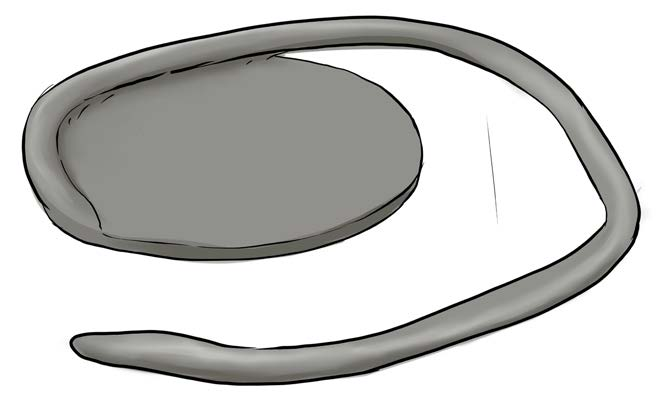

(d)
Roll the coil to get the width of the object you want to model, as shown in Figure 8;
(e)
Join the coil to the base and place another coil on top of the first one;

Figure 8: Joining the base and the coil
(f)
Use the thumb to press the coil from the top to the base, as shown in Figure 9;

Figure 9: Strengthening the base and the coil
(g)
Make another round above the circle that accompanied the base;
FOR ONLINE READING ONLY